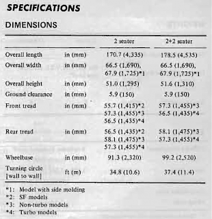

-
Are 2+0 hatches the same length as the 2+2 hatch? The hatch begins at the top corner of the rear side windows on both cars, and the 2+2 has windows that are extended before the begining point on the hatch. Would that mean they are the same or could the hatch's entire angle and length be different?Last edited by GrenadeGregory; 12-11-2017, 10:09 PM. -
The hatches are different. 2 seater has a longer hatch. -
the glass area on the 2+2 is smaller too -
Was curious, so I took a couple pics of my 87 2+0 Red & 89 2+2 Gold. These are not accurate measurements, just round about for comparison.
Last edited by Dunkine; 12-12-2017, 04:35 PM. Reason: Made pics smaller…not going side by side like I want them to though… -
Can confirm, the 2+2 Is longer. Also if you're wondering, the hatch sizes /weights are also different. Learned that the hard way when trying to replace the gas struts on the hatch. Oh and I remember reading in my Owners Manual something like that too. I have attached a picture of that portion.

Copyright © 2006–. All rights reserved. Privacy Policy